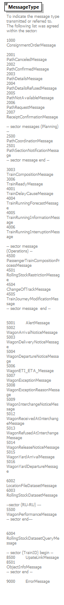

| diagram |  | |||||||||
| namespace | http://taf-jsg.info/schemes | |||||||||
| type | restriction of xs:string | |||||||||
| properties |
|
|||||||||
| used by |
|
|||||||||
| facets |
|
|||||||||
| annotation |
|
|||||||||
| source | <xs:element name="MessageType"> <xs:annotation> <xs:documentation>To indicate the message type transmitted or referred to. The following list was agreed within the sector: 1000 ConsignmentOrderMessage 2001 PathCanceledMessage 2002 PathConfirmedMessage 2003 PathDetailsMessage 2004 PathDetailsRefusedMessage 2005 PathNotAvailableMessage 2006 PathRequestMessage 2007 ReceiptConfirmationMessage -- sector messages (Planning) -- 2500 PathCoordinationMessage 2501 PathSectionNotificationMessage -- sector message end -- 3003 TrainCompositionMessage 3006 TrainReadyMessage 4001 TrainDelayCauseMessage 4004 TrainRunningForecastMessage 4005 TrainRunningInformationMessage 4006 TrainRunningInterruptionMessage -- sector message (Operations) -- 4500 PassengerTrainCompositionProcessMessage 4501 RollingStockRestrictionMessage 4504 ChangeOfTrackMessage 4505 TrainJourneyModificationMessage -- sector message end -- 5001 AlertMessage 5002 WagonArrivalNoticeMessage 5003 WagonDeliveryNoticeMessage 5004 WagonDepartureNoticeMessage 5006 WagonETI_ETA_Message 5007 WagonExceptionMessage 5008 WagonExceptionReasonMessage 5009 WagonInterchangeNoticeMessage 5012 WagonReceivedAtInterchangeMessage 5013 WagonRefusedAtInterchangeMessage 5014 WagonReleaseNoticeMessage 5015 WagonYardArrivalMessage 5016 WagonYardDepartureMessage 6002 LocationFileDatasetMessage 6003 RollingStockDatasetMessage --sector (RU-RU) --- 5500 WagonPerformanceMessage -- sector end--- 6004 RollingStockDatasetQueryMessage -- sector (TrainID) begin -- 8500 UpateLinkMessage 8501 ObjectInfoMessage -- sector end -- 9000 ErrorMessage </xs:documentation> </xs:annotation> <xs:simpleType> <xs:restriction base="xs:string"> <xs:minLength value="1"/> <xs:maxLength value="4"/> </xs:restriction> </xs:simpleType> </xs:element> |